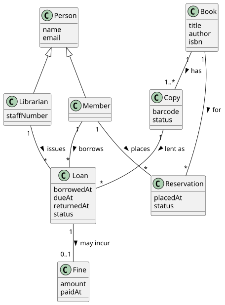
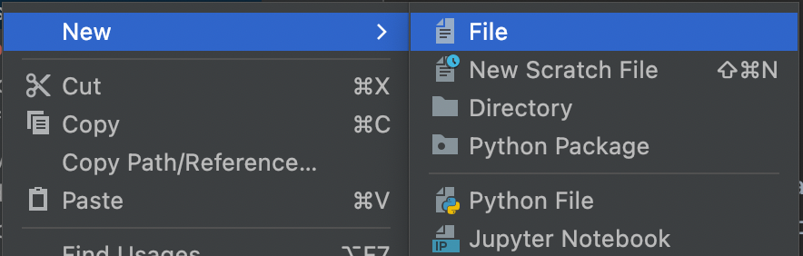
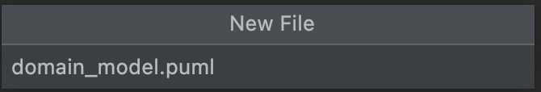

Workshop 2#
By Now You Should Have
Formed a team of 5 (all in this workshop) and submitted the Team Registration survey on Canvas.
Accepted your GitHub invitation to the
SWEN90007-2026organisation (sent in Week 2).Begun setting up your development environment (see the setup guides for the steps).
Started thinking about your domain model for Part 1A.
Been taking minutes of your weekly group meetings and recording them in your GitHub Wiki.
The purpose of today’s workshop is to make real progress on Part 1A — your domain model. We’ll cover what a good domain model looks like, work through a complete example together, and learn the diagramming tools so you can produce yours.
Part 1A at a glance#
Part 1A asks you to design your application’s domain model and present it as a domain model diagram plus an accompanying written description.
📦 Deliverable
A domain model diagram and its written description, in your GitHub Wiki.
No LMS submission.
🏷️ Submission
A release tag in the required format, pushed before the deadline.
🎯 8 marks
Modelling of the problem · correct UML notation · the right level of abstraction · an accurate description.
Part 1A is assessed entirely from your GitHub Wiki and release tag — there is no oral assessment or video for it. If it isn’t in the Wiki under the tag before the deadline, it isn’t marked.
Expected Knowledge#
Software Modelling and Design is a prerequisite for this subject, so you are expected to be comfortable with:
object-oriented programming, and
creating use cases and domain models.
If you’d like a refresher, we recommend:
the course notes (available on LMS),
Applying UML and Patterns by Craig Larman, and
Writing Effective Use Cases by Alistair Cockburn.
What is a domain model?#
A domain model is a visual representation of the concepts in your problem domain and the relationships between them — the vocabulary of the system, drawn from the requirements, before you worry about code, screens, or database tables.
Keep it conceptual: at this stage your model captures what the system is about, not how it is built. Include conceptual classes (things the domain talks about), their attributes, and their associations; show multiplicities and, where relevant, generalisation (is-a hierarchies). Leave out methods, controllers, servlets, JSON, primary/foreign keys, and UI details — those come in later parts.
This matters for your mark: one of the four things Part 1A is assessed on is “appropriate level of detail and abstraction.” A model cluttered with implementation detail loses marks just as one that is too sparse does.
The four steps we’ll use#
Find the concepts
Read the use cases and underline the nouns — your candidate classes (people, things, transactions, roles).
Add attributes
Capture the data each concept holds — the properties the requirements mention (a title, a date, a status).
Draw associations
Connect related concepts, label each with a verb, and add multiplicities at both ends.
Generalise & note states
Pull shared concepts into is-a hierarchies, and note any lifecycle states an entity moves through.
A worked example: a library lending system#
To learn the technique without simply copying the answer, we’ll model a different domain from your project: a small library lending system. It has the same shapes of problem you’ll meet in your project — users with different roles, a bookable resource that changes state, a borrowing lifecycle, and money owed — so the modelling skills transfer directly.
Example requirements
The library has members (who borrow) and librarians (staff who issue loans and manage stock). Both are people with a name and email; librarians additionally have a staff number.
The library holds books (a title, by an author, identified by an ISBN). Each book has one or more physical copies, and each copy is either available, on loan, or reserved.
A member can borrow an available copy, creating a loan with a borrow date and a due date. When the copy is returned, the loan is closed.
A member can reserve a book that is currently unavailable.
If a loan is returned late, it incurs a fine (an amount the member owes). Members can view and pay down what they owe.
Step 1 — find the concepts. Underlining the nouns gives us: Person (member/librarian), Book, Copy, Loan, Reservation, Fine.
Step 2–4 — attributes, associations, generalisation, and states. Working through the requirements produces the model below.
{kind=link}

Fig. 1 The library domain model. Copy the source into a *.puml file (see Diagramming tools, below) to reproduce and edit it.#
PlantUML source — library.puml
@startuml
' --- Generalisation: a member and a librarian are both people ---
Person <|-- Member
Person <|-- Librarian
' --- Associations with multiplicities and a reading direction ---
Book "1" -- "1..*" Copy : has >
Member "1" -- "*" Loan : borrows >
Copy "1" -- "*" Loan : lent as >
Librarian "1" -- "*" Loan : issues >
Member "1" -- "*" Reservation : places >
Book "1" -- "*" Reservation : for >
Loan "1" -- "0..1" Fine : may incur >
class Person {
name
email
}
class Member {
}
class Librarian {
staffNumber
}
class Book {
title
author
isbn
}
class Copy {
barcode
status
}
class Loan {
borrowedAt
dueAt
returnedAt
status
}
class Reservation {
placedAt
status
}
class Fine {
amount
paidAt
}
@enduml
Why the model looks like this — the decisions worth explaining in your description:
BookvsCopy. A book is the abstract title; a copy is a physical item you can actually lend. Modelling them separately lets many copies exist for one title, and lets a single copy be available / on loan / reserved — thestatuslives onCopy, notBook. Collapsing them would make “borrow a copy” impossible to express cleanly.LoanandReservationas their own classes. A borrowing isn’t an attribute of a member or a copy — it’s a thing with its own data (dates, status) that links the two. These are association classes / transactions, and they carry the lifecycle.Multiplicities encode the rules.
Book "1" -- "1..*" Copysays every book has at least one copy;Loan "1" -- "0..1" Finesays a loan has at most one fine. Getting these right is where a lot of the modelling marks are.Generalisation.
MemberandLibrariansharename/email, so they generalise toPerson. This is a deliberate choice you should be able to justify.States are domain rules. A
Copymoves available → on loan → available, and available → reserved; aLoanmoves active → returned or active → overdue. You capture the attribute (status) in the domain model and describe the valid transitions in your accompanying text.
Map the shapes onto your own project#
Notice the transferable patterns — every one has an analogue in your ticketing platform:
Modelling shape (library) |
The same shape appears in your project as… |
|---|---|
|
users who have different roles |
|
the thing an attendee actually books |
|
the record created when someone books |
|
how you represent balances and charges |
Identifying and modelling these for your domain is exactly the Part 1A task — so build your own model from your requirements; don’t copy the library one.
Applying it to your project#
Take the project spec’s Functionality section and run the same four steps over your use cases. As you do, ask yourself:
Concepts: which nouns in the requirements are real domain concepts, and which are just UI or wording?
Attributes: what data does each concept genuinely own? (e.g. what belongs on the event vs. on a section vs. on an individual seat?)
Associations & multiplicity: how many of each relate to each other? Which relationships are
1..*vs0..*vs1?Transactions: which of your concepts are records of something happening (with their own data and lifecycle) rather than static things?
Generalisation: is there shared structure worth pulling into an is-a hierarchy? Can you justify it?
States: which entities move through a lifecycle, and what are the valid transitions?
Diagramming tools#
Every diagram in this subject is UML, and the modern way to make one is diagram-as-code: you describe the diagram in a few lines of text and a tool renders it. Text beats drag-and-drop editors here — it versions cleanly in git, is reviewable in a pull request, and never leaves you chasing a stale exported image. You’ll use the same approach for every diagram across the project (class, sequence, activity, component, state, …).
Here are three ways to create one, from zero-setup to full IDE integration.
2. Preview in the browser as you iterate#
Want a live preview outside GitHub while you draft? Paste your source into a web editor, watch it update as you type, and export an SVG/PNG if you need a static image:
Mermaid → mermaid.live
PlantUML → the PlantUML web server
3. Work in your IDE (PlantUML + IntelliJ)#
If you’d rather keep diagrams beside your code, PlantUML renders live inside IntelliJ — this is what the library diagram earlier in this workshop was built with.
Install Graphviz — PlantUML uses it to lay out diagrams.
Install the PlantUML integration plugin.
Create a new
*.pumlfile and paste in a diagram — IntelliJ renders it live beside the source.


The full library model in PlantUML is in the PlantUML source dropdown earlier in this workshop; see PlantUML’s class-diagram guide for the syntax.
Submitting Part 1A#
Part 1A is Wiki-only — there is no submission to Canvas/LMS. Everything is assessed from your GitHub Wiki under a release tag. Before the deadline, work through this checklist:
Your domain model diagram is in the Wiki, using correct UML class-diagram notation.
Classes carry the attributes they need — no implementation detail (no keys, methods, or UI).
Every association has a multiplicity at each end and a verb labelling it.
Any generalisation hierarchies your domain calls for are shown.
A written description walks a reader through the model and justifies your key modelling choices (this is half of what’s assessed).
Your team details (names, student IDs, usernames) are recorded as required.
A release tag named
SWEN90007_2026_Part1A_<team name>is pushed before the deadline. (How to create a tag.)
The teaching team can see when you create a tag and will check it was pushed before the deadline — late tags attract the standard 10%-per-day penalty.